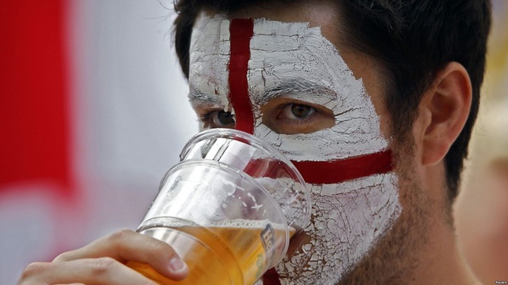

В Москве во время ЧМ-2018 ограничат продажу алкоголя
Ограничения будут действовать только в местах массового скопления болельщиков. Всего их три.
В Москве на время проведения Чемпионата мира по футболу 2018 года власти введут запрет на продажу и распитие алкогольных напитков на установленных территориях. Об этом рассказал заявил замглавы департамента региональной безопасности и противодействия коррупции Москвы Кирилл Малышкин.
Чиновник уточнил, что постановление будет действовать не только в дни проведения футбольных матчей турнира, но и непосредственно перед ними. Кроме того, под запрет попадают не только алкогольные, но и все другие напитки, разливаемые в стеклянную тару.
Антиалкогольный запрет распространяется только на определенные территории. Всего их три: зоны стадионов «Спартак» и «Лужники», а также площадь «Фестиваля болельщиков», который откроется на Воробьевых горах. Ограничения будут действовать в радиусе примерно двух километров за территорией вышеперечисленных площадок. Точное расположение и границы зон, в которых запретят продавать и употреблять алкоголь (в том числе в заведениях общественного питания), уже определены столичной мэрией.
«Для оказания помощи лицам, находящимся в состоянии алкогольного опьянения, правительством Москвы совместно с заинтересованными службами разрабатываются лечебно-эвакуационные мероприятия в период проведения чемпионата мира, в которых определен перечень больниц и поликлиник, где будут оказывать медицинскую помощь», – рассказал Малышкин.сообщили в пресс-службе московского департамента региональной безопасности и противодействия коррупции.
В российской столице пройдут 12 матчей Чемпионата мира по футболу 2018 года. Это игры групповой стадии и плей-офф, включая матч открытия и финал турнира.
.png)